మూలపాఠం అనువాదం · Telugu source translation
పూర్ణాంకాలను నిర్దిష్ట స్థానానికి సవరించి రాయడం
నివేదిక సంవత్సరం: అమెరికా జనగణన విభాగం తెలిపిన న్యూయార్క్ రాష్ట్ర జనాభా మంది. జనాభాను సుమారు మిలియన్లు అని చెబితే సరిపోవచ్చు. ఇక్కడ సుమారు (approximately) అంటే మిలియన్లు అసలు జనాభాకు సరిగ్గా సమానం కాదు, కానీ ఆ విలువకు దగ్గరగా ఉంది అని అర్థం.
ఒక సంఖ్యకు దగ్గరి విలువను నిర్దిష్ట స్థానం ఆధారంగా రాసే ప్రక్రియను సవరించి రాయడం (rounding) అంటాం. ఎంత ఖచ్చితత్వం అవసరమో దాని ప్రకారం సంఖ్యను ఒక నిర్దిష్ట స్థానానికి సవరించి రాస్తాం. మిలియన్లు అనే విలువ మిలియన్ల స్థానానికి సవరించడం వల్ల వచ్చింది. వంద వేల స్థానానికి సవరించి ఉంటే ఫలితం వచ్చేది. పది వేల స్థానానికి సవరించి ఉంటే ఫలితం వచ్చేది. ఇలాగే ఇతర స్థానాలకు కూడా సవరించవచ్చు. సంఖ్యను ఎలా ఉపయోగించాలో దాని ప్రకారం ఏ స్థానానికి సవరించాలో నిర్ణయిస్తాం.
సంఖ్యారేఖపై చూస్తే సవరించే ప్రక్రియను ఊహించుకోవడం, అర్థం చేసుకోవడం సులభం. సంబంధిత పటం లోని సంఖ్యారేఖను చూడండి. సంఖ్య ను దగ్గరి పదులకు సవరించాలని అనుకుందాం. సంఖ్యారేఖపై కు దగ్గరగా ఉన్నది లేదా — ఏది?
అన్ని నిలువు వరుసలను చూడటానికి పటాన్ని అడ్డంగా జరపండి.
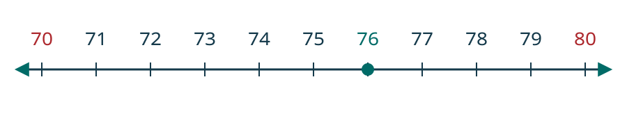
ఇప్పుడు చూడవలసిన సంఖ్య సంఖ్య ఉన్నచోటును సంబంధిత పటం లో గుర్తించండి.
అన్ని నిలువు వరుసలను చూడటానికి పటాన్ని అడ్డంగా జరపండి.
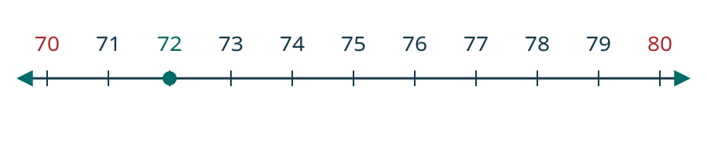
సంఖ్య ను దగ్గరి పదులకు ఎలా సవరించాలి? సంఖ్య ఉన్నచోటును సంబంధిత పటం లో గుర్తించండి.
అన్ని నిలువు వరుసలను చూడటానికి పటాన్ని అడ్డంగా జరపండి.
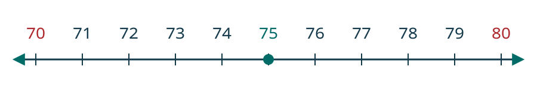
ఇలాంటి సందర్భాల్లో ఒకే విధంగా సవరించడానికి, మూలపాఠం అనుసరించే గణిత సంప్రదాయం పెద్ద సంఖ్యను ఎంచుకోవడం. ఇక్కడ అది కాబట్టి ను దగ్గరి పదులకు సవరించి రాస్తే
సంఖ్యారేఖపై చూసిన విధానాన్ని ఇప్పుడు సాధారణ నియమంగా రాద్దాం. ఒక నిర్దిష్ట స్థానానికి సవరించేటప్పుడు, దానికి వెంటనే కుడివైపున ఉన్న అంకెను చూడాలి. కిందికి సవరించడానికి పోలిక హద్దు దానికన్నా చిన్న అంకె ఉంటే కిందికి సవరించాలి. పైకి సవరించడానికి పోలిక హద్దు దానికి సమానమైన లేదా పెద్ద అంకె ఉంటే పైకి సవరించాలి.
ఉదాహరణకు, సంఖ్య ను దగ్గరి పదులకు సవరించడానికి ఒకట్ల స్థానంలోని అంకెను చూస్తాం.
అన్ని నిలువు వరుసలను చూడటానికి పటాన్ని అడ్డంగా జరపండి.
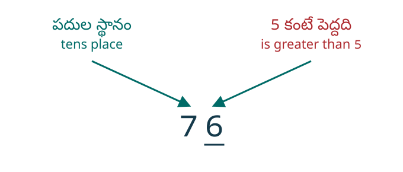
ఒకట్ల స్థానంలో ఉన్న అంకె ఇక్కడ విలువ కనీసం కాబట్టి పదుల స్థానంలోని అంకెకు ఒకటి కలుపుతాం. అందువల్ల పదుల స్థానంలో ఉన్న మారిన తరువాత ఇప్పుడు కు కుడివైపున ఉన్న అంకెలను సున్నాలతో భర్తీ చేస్తాం. కాబట్టి ను సవరించి రాస్తే
అన్ని నిలువు వరుసలను చూడటానికి పటాన్ని అడ్డంగా జరపండి.
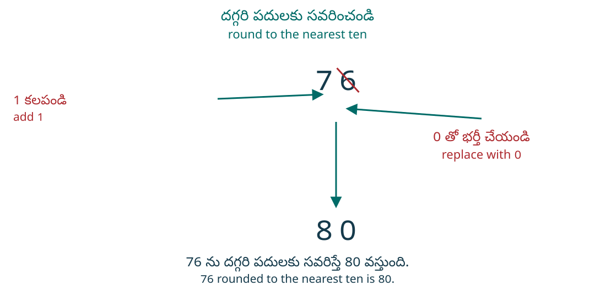
మళ్లీ పరిశీలిద్దాం: సవరించి రాయడం (rounding). సంఖ్య ; పరిగణించవలసిన స్థానపు విలువ అంటే దగ్గరి పదులకు సవరించాలి. అందుకు మళ్లీ ఒకట్ల స్థానాన్ని చూస్తాం.
అన్ని నిలువు వరుసలను చూడటానికి పటాన్ని అడ్డంగా జరపండి.
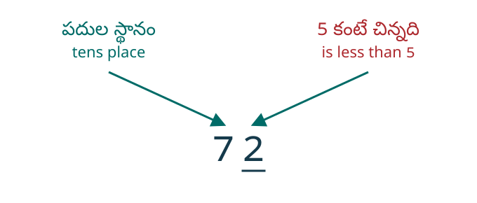
ఒకట్ల స్థానంలో ఉన్న అంకె ఇక్కడ కంటే పెద్దది కాబట్టి పదుల స్థానంలోని అంకెను అలాగే ఉంచి, దానికి కుడివైపు అంకెలను సున్నాతో భర్తీ చేస్తాం. అందువల్ల ను దగ్గరి పదులకు సవరించి రాస్తే
అన్ని నిలువు వరుసలను చూడటానికి పటాన్ని అడ్డంగా జరపండి.
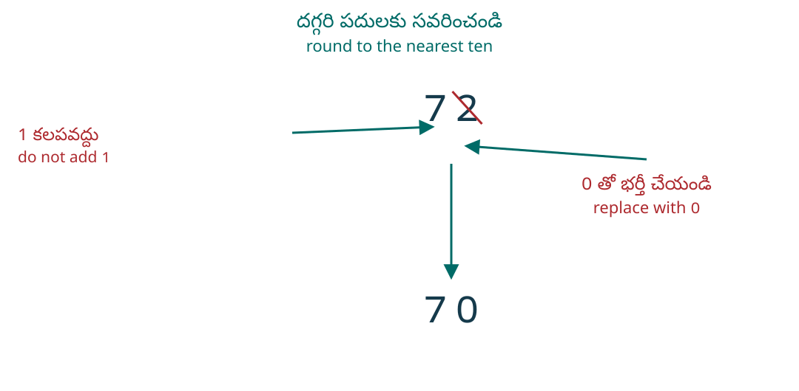
సంఖ్య ను దగ్గరి పదులకు సవరించండి.
సాధన — Solution
చిన్న తెరపై 2 నిలువు వరుసలూ చూడటానికి పట్టికను అడ్డంగా జరపండి.
| పదుల స్థానాన్ని గుర్తించండి. | అన్ని నిలువు వరుసలను చూడటానికి పటాన్ని అడ్డంగా జరపండి. |
| పదుల స్థానానికి వెంటనే కుడివైపున ఉన్న అంకె కింద గీత గీయండి. | అన్ని నిలువు వరుసలను చూడటానికి పటాన్ని అడ్డంగా జరపండి. |
| 3 అనేది 5 కంటే చిన్నది కాబట్టి పదుల స్థానంలోని అంకెను మార్చవద్దు. | అన్ని నిలువు వరుసలను చూడటానికి పటాన్ని అడ్డంగా జరపండి. |
| పదుల స్థానానికి కుడివైపున ఉన్న అంకెలన్నింటినీ సున్నాలతో భర్తీ చేయండి. | అన్ని నిలువు వరుసలను చూడటానికి పటాన్ని అడ్డంగా జరపండి. |
| 843 ను దగ్గరి పదులకు సవరించి రాస్తే 840 వస్తుంది. |
ప్రతి సంఖ్యను దగ్గరి వందలకు సవరించండి:
- ⓐ
- ⓑ
సాధన — Solution
చిన్న తెరపై 2 నిలువు వరుసలూ చూడటానికి పట్టికను అడ్డంగా జరపండి.
| ⓐ | |
| వందల స్థానాన్ని గుర్తించండి. | అన్ని నిలువు వరుసలను చూడటానికి పటాన్ని అడ్డంగా జరపండి. 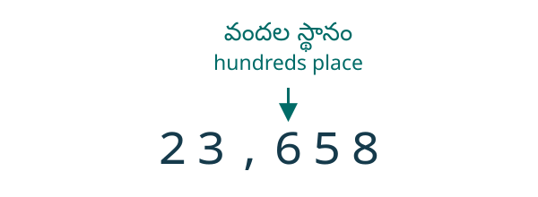 |
| వందల స్థానానికి వెంటనే కుడివైపున ఉన్న అంకె 5. ఆ అంకె కింద గీత గీయండి. | అన్ని నిలువు వరుసలను చూడటానికి పటాన్ని అడ్డంగా జరపండి. |
| 5 అనేది 5 కు సమానం కాబట్టి వందల స్థానంలోని అంకెకు 1 కలిపి పైకి సవరించండి. తరువాత వందల స్థానానికి కుడివైపున ఉన్న అంకెలన్నింటినీ సున్నాలతో భర్తీ చేయండి. | అన్ని నిలువు వరుసలను చూడటానికి పటాన్ని అడ్డంగా జరపండి. 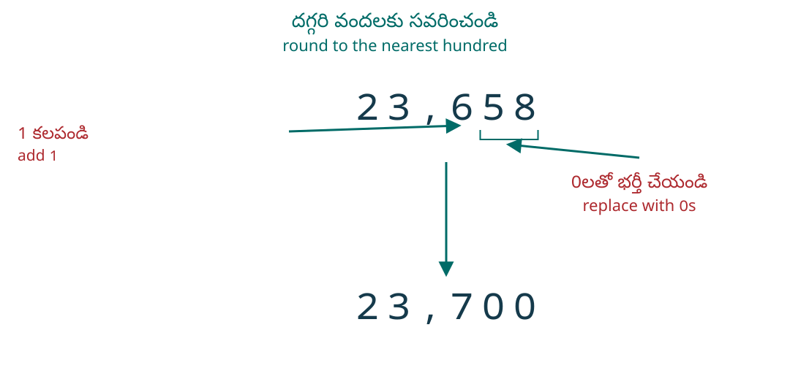 కాబట్టి 23,658 ను దగ్గరి వందలకు సవరించి రాస్తే 23,700 వస్తుంది. |
చిన్న తెరపై 2 నిలువు వరుసలూ చూడటానికి పట్టికను అడ్డంగా జరపండి.
| ⓑ | |
| వందల స్థానాన్ని గుర్తించండి. | అన్ని నిలువు వరుసలను చూడటానికి పటాన్ని అడ్డంగా జరపండి. 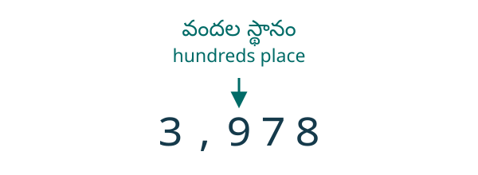 |
| వందల స్థానానికి వెంటనే కుడివైపున ఉన్న అంకె కింద గీత గీయండి. | అన్ని నిలువు వరుసలను చూడటానికి పటాన్ని అడ్డంగా జరపండి. |
| వందల స్థానానికి వెంటనే కుడివైపున ఉన్న అంకె 7. అది 5 కంటే పెద్దది కాబట్టి 9 కు 1 కలిపి పైకి సవరించండి. తరువాత వందల స్థానానికి కుడివైపున ఉన్న అంకెలన్నింటినీ సున్నాలతో భర్తీ చేయండి. | అన్ని నిలువు వరుసలను చూడటానికి పటాన్ని అడ్డంగా జరపండి. 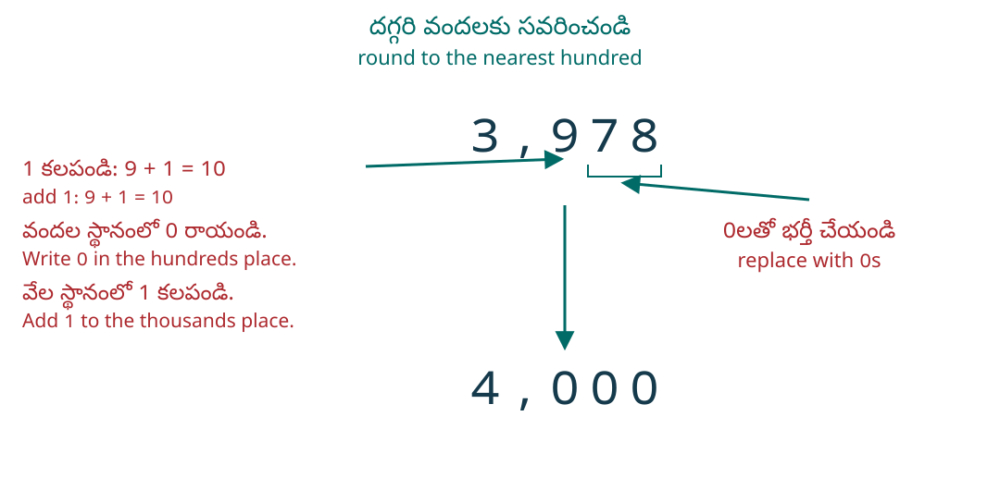 కాబట్టి 3,978 ను దగ్గరి వందలకు సవరించి రాస్తే 4,000 వస్తుంది. |
ప్రతి సంఖ్యను దగ్గరి వేలకు సవరించండి:
- ⓐ
- ⓑ
సాధన — Solution
చిన్న తెరపై 2 నిలువు వరుసలూ చూడటానికి పట్టికను అడ్డంగా జరపండి.
| ⓐ | |
| వేల స్థానాన్ని గుర్తించండి. దానికి వెంటనే కుడివైపున ఉన్న అంకె కింద గీత గీయండి. | అన్ని నిలువు వరుసలను చూడటానికి పటాన్ని అడ్డంగా జరపండి. 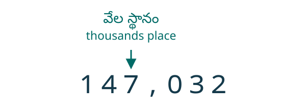 |
| వేల స్థానానికి వెంటనే కుడివైపున ఉన్న అంకె 0. అది 5 కంటే చిన్నది కాబట్టి వేల స్థానంలోని అంకెను మార్చము. | అన్ని నిలువు వరుసలను చూడటానికి పటాన్ని అడ్డంగా జరపండి. |
| తరువాత వేల స్థానానికి కుడివైపున ఉన్న అంకెలన్నింటినీ సున్నాలతో భర్తీ చేస్తాం. | అన్ని నిలువు వరుసలను చూడటానికి పటాన్ని అడ్డంగా జరపండి. కాబట్టి 147,032 ను దగ్గరి వేలకు సవరించి రాస్తే 147,000 వస్తుంది. |
చిన్న తెరపై 2 నిలువు వరుసలూ చూడటానికి పట్టికను అడ్డంగా జరపండి.
| ⓑ | |
| వేల స్థానాన్ని గుర్తించండి. | అన్ని నిలువు వరుసలను చూడటానికి పటాన్ని అడ్డంగా జరపండి. 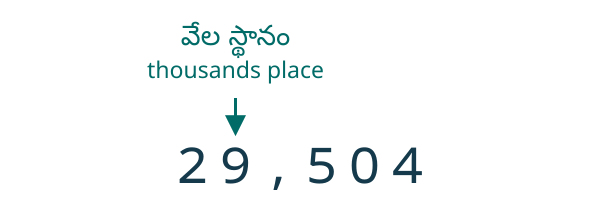 |
| వేల స్థానానికి వెంటనే కుడివైపున ఉన్న అంకె కింద గీత గీయండి. | అన్ని నిలువు వరుసలను చూడటానికి పటాన్ని అడ్డంగా జరపండి. |
| వేల స్థానానికి వెంటనే కుడివైపున ఉన్న అంకె 5. అది 5 కు సమానం కాబట్టి 9 కు 1 కలిపి పైకి సవరించండి. తరువాత వేల స్థానానికి కుడివైపున ఉన్న అంకెలన్నింటినీ సున్నాలతో భర్తీ చేయండి. | అన్ని నిలువు వరుసలను చూడటానికి పటాన్ని అడ్డంగా జరపండి. 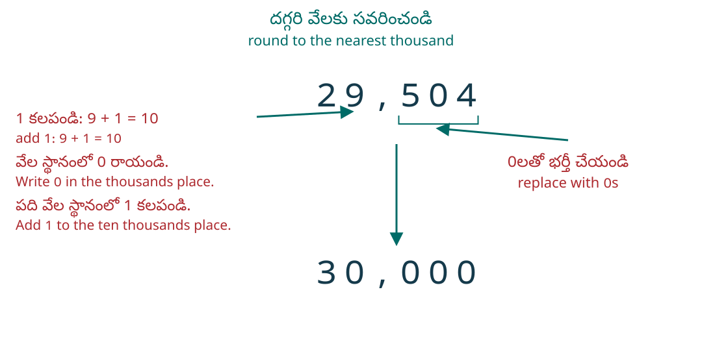 కాబట్టి 29,504 ను దగ్గరి వేలకు సవరించి రాస్తే 30,000 వస్తుంది. |
భాగం ⓑ లో, వెయ్యి విలువగల సమూహాన్ని అలాంటి సమూహాలకు కలిపితే మొత్తం సమూహాలు వస్తాయి. వీటిని పది వేల విలువగల సమూహంగా, వెయ్యి విలువగల సమూహాలుగా మళ్లీ అమర్చుతాం. కొత్తగా వచ్చిన పది వేల విలువగల సమూహాన్ని, ఇంతకుముందు ఉన్న పది వేల విలువగల సమూహాలకు కలిపి, వేల స్థానంలో రాస్తాం.
ఏ స్థానానికి? ఏ రెండు విలువల మధ్య? ఏది దగ్గర?
ఈ భాగంలోని వివరణలు, ప్రారంభ ప్రశ్నలు, మళ్లీ-తనిఖీ ప్రశ్నలు, విస్తృత సాధనలు తెలుగు–English సేతువు కోసం కొత్తగా రాసినవి; ఇవి OpenStax మూలపాఠంలో భాగం కావు. ఇవి తరగతిని నిర్ణయించే ప్రమాణీకృత పరీక్షలు కావు. జవాబుతో పాటు కారణం చెప్పండి లేదా రాయండి. చదవడంలో సహాయం ఇవ్వవచ్చు; గణిత జవాబు చెప్పకూడదు. కాల పరిమితి లేదు; వ్యక్తిగత సమాచారం సేకరించము.
మొదట అడిగిన స్థానాన్ని గుర్తించండి
అడిగిన స్థానం పదులైతే పక్క కుడివైపు ఒకట్ల అంకెను చూడండి. వందలైతే పదుల అంకెను; వేలైతే వందల అంకెను చూడండి. మధ్యలో 0 కనిపించినా దాన్ని దాటి మరొక అంకెను చూడకండి. నిర్ణయానికి వెంటనే కుడి పక్క అంకె ఒక్కటే కావాలి. ఆ తరువాత అడిగిన స్థానానికి కుడివైపున ఉన్న అంకెలన్నింటినీ సున్నాలతో భర్తీ చేస్తాం.
0, 1, 2, 3, 4 ఉంటే అడిగిన స్థానంలోని అంకెను పెంచము. 5, 6, 7, 8, 9 ఉంటే ఆ స్థానానికి చెందిన ఒక ప్రమాణం పెంచాలి: పదులకు సవరించేటప్పుడు ఒక పది, వందలకు ఒక వంద, వేలకు ఒక వెయ్యి. ఇది మొత్తం సంఖ్యకు కేవలం 1 కలపడం కాదు. 9 కు ఒకటి కలపవలసి వచ్చినప్పుడు అక్కడ 0 రాసి ఎడమ పక్క స్థానానికి ఒకటి కలుపుతాం; అవసరమైతే ఈ బదిలీని (carry) కొనసాగిస్తాం.
మూల ఉదాహరణ 3,978 ను దగ్గరి వందలకు సవరించేటప్పుడు లక్ష్య అంకె వందల స్థానంలోని 9; నిర్ణయానికి చూసేది పదుల స్థానంలోని 7. 29,504 ను దగ్గరి వేలకు సవరించేటప్పుడు లక్ష్య అంకె వేల స్థానంలోని 9; చూసేది వందల స్థానంలోని 5. వేరే స్థానానికి సవరించినా కొన్ని సందర్భాల్లో అదే జవాబు రావచ్చు. అందుకే జవాబుతో పాటు లక్ష్య స్థానాన్నీ చూసిన అంకెనూ తనిఖీ చేయాలి.
ముందుగా మీరే ప్రయత్నించండి · Entry check
ప్రతి ప్రశ్నలో అడిగిన స్థానం, దాని అంకె, వెంటనే కుడి పక్క అంకె, పూర్తి జవాబు, కారణం చూపండి. అవసరమైన చోట దూరాలనూ బదిలీనీ వివరించండి.
- D01 · K1 46,082 ను దగ్గరి వేలకు సవరించండి. పక్క కుడి అంకె 0 ను ఎందుకు దాటకూడదు? జవాబు 46 కాదు అని వివరించండి.
- D02 · K1 అదే 46,082 ను దగ్గరి వందలకు సవరించండి. D01 తో పోలిస్తే ఇప్పుడు చూడవలసిన అంకె ఎలా మారింది?
- D03 · K2 245 ను దగ్గరి పదులకు సవరించండి. పక్కపక్క పదులకు దూరాలను లెక్కించి, సమాన దూరంలో ఉన్నప్పుడు ఏ నియమం వాడారో చెప్పండి.
- D04 · K2 2,451 ను దగ్గరి వందలకు సవరించండి. చూసే అంకె 5 అయినంత మాత్రాన ఈ సంఖ్య సరిగ్గా మధ్యలో ఉందా? దూరాలతో వివరించండి.
- D05 · K3 9,995 ను దగ్గరి పదులకు సవరించండి. 9 ల మీదుగా జరిగే బదిలీని, చివరి పూర్తి సంఖ్యను చూపండి.
- D06 · K3 99,499 ను దగ్గరి వేలకు సవరించండి. వేల స్థానంలో 9 ఉన్నా బదిలీ అవసరమా? ఎందుకు?
జవాబుల ఆధారంగా తదుపరి అడుగు
K1 = D01–D02: అడిగిన స్థానం, పక్క కుడి అంకె, పూర్తి విలువ. K2 = D03–D04: దగ్గరితనం, సమాన దూరం, 5 అంకె పాత్ర. K3 = D05–D06: బదిలీ అవసరమా, అవసరమైతే ఎలా కొనసాగించాలి. ఒక ప్రశ్నలోని అన్ని భాగాలకూ జవాబులు, కారణాలు సరిగ్గా ఉంటే 1 ఇవ్వండి. కారణం లేకపోతే వివరణ అడగండి; ప్రస్తుతానికి 0 గా గుర్తించండి.
ఒక్కో నైపుణ్యంలో 2/2 వస్తే నేరుగా సంబంధిత మళ్లీ-తనిఖీకి వెళ్లండి. 0/2 లేదా 1/2 వస్తే సంబంధిత సహాయం చదివి, తరువాత మళ్లీ తనిఖీ చేయండి. మళ్లీ-తనిఖీలో K1 = R01–R02; K2 = R03–R04; K3 = R05–R06. సంబంధిత రెండు ప్రశ్నలనూ కారణాలతో సరిగ్గా చేసినప్పుడు ఆ నైపుణ్యం ఈ చిన్న యూనిట్కు సిద్ధమైనట్లు గుర్తించండి. మొదటి ప్రయత్నపు తక్కువ మార్కులు, సహాయం తరువాత సిద్ధం కావడానికి అడ్డంకి కావు. మూడు నైపుణ్యాలూ సిద్ధమైతే తదుపరి పాఠానికి వెళ్లండి; లేదంటే అవసరమైన సహాయం మళ్లీ తీసుకోండి. మొత్తం మార్కులతో ఒక నైపుణ్యంలోని లోటును దాచవద్దు.
Per skill, an entry score of 2/2 leads directly to recheck; 0/2 or 1/2 leads to the corresponding support first. Readiness requires both matching recheck items correct in all parts, with explanations. This is an editorial teaching rule, not a validated placement threshold. The reader records no answers.
- K1 · 0 కూడా నిర్ణయానికి చూసే అంకె కావచ్చు
- 147,032 లో వేల స్థానానికి వెంటనే కుడివైపు వందల అంకె 0. అది 5 కంటే చిన్నది; అందువల్ల వేల అంకె 7 ను పెంచము. చివరి మూడు అంకెలను సున్నాలతో భర్తీ చేసి 147,000 రాస్తాం. ఇది దగ్గరి వెయ్యి గుణిజం. 147 అనే సంఖ్య రాస్తే అంకెలను తొలగించినట్లవుతుంది; అది సవరించిన విలువ కాదు.
- K2 · 5 కనిపించడం, సరిగ్గా మధ్యలో ఉండడం ఒకటే కాదు
- దగ్గరి వందలకు సవరించేటప్పుడు 23,650 సరిగ్గా 23,600, 23,700 మధ్య ఉంటుంది. కానీ 23,658 ఆ మధ్య విలువకంటే ఎనిమిది ఎక్కువ. రెండింటిలో పదుల అంకె 5 అయినా, మొదటిది మాత్రమే సమాన దూరంలో ఉంది. రెండూ ఇక్కడి నియమం ప్రకారం 23,700 అవుతాయి. 5 తరువాతి అంకెలు సున్నాలైతే సమాన దూరం; వాటిలో ఏదైనా సున్నా కాకపోతే మధ్య విలువకంటే పైగా ఉంటుంది.
- K3 · బదిలీకి ముందు పైకి సవరించాలా అని చూడండి
- అడిగిన స్థానంలో 9 ఉండటం ఒక్కటే బదిలీకి కారణం కాదు. పక్క కుడి అంకె కనీసం 5 ఉన్నప్పుడే పైకి సవరించాలి. అప్పుడు 9 + 1 = 10 కాబట్టి ఆ స్థానంలో 0 రాసి ఎడమ స్థానానికి ఒకటి కలుపుతాం. అక్కడ కూడా 9 ఉంటే ఇదే ప్రక్రియ కొనసాగుతుంది. ఒక అంకె గడిలో 10 రాయకండి; రెండు స్థానాల్లో 1, 0 గా అమర్చాలి. చివర అన్ని అవసరమైన సున్నాలనూ రాయండి.
ప్రారంభ ప్రశ్నల పూర్తి సాధనలు
- D01: లక్ష్యం వేల స్థానం; దాని అంకె 6. వెంటనే కుడివైపున వందల అంకె 0. 0 అనేది 5 కంటే చిన్నది కాబట్టి 6 అలాగే ఉంటుంది. 082 ను 000 తో భర్తీ చేస్తే 46,000. తనిఖీకి పక్క గుణిజాలు 46,000, 47,000; దూరాలు 82, 918. జవాబు పూర్తి విలువ 46,000; 46 అనేది అందులోని వేల సమూహాల లెక్క మాత్రమే.
- D02: లక్ష్యం వందల స్థానం; దాని అంకె 0. ఇప్పుడు వెంటనే కుడివైపు పదుల అంకె 8 ను చూడాలి. అది 5 కంటే పెద్దది కాబట్టి వందల అంకె 0 కు 1 కలిపి 1 చేస్తాం. చివరి రెండు అంకెలను సున్నాలతో భర్తీ చేస్తే 46,100. పక్క గుణిజాలు 46,000, 46,100; దూరాలు 82, 18. D01 లో వందల అంకె నిర్ణయానికి ఉపయోగపడింది; ఇక్కడ పదుల అంకె ఉపయోగపడింది.
- D03: లక్ష్యం పదుల స్థానం; అంకె 4; చూసే ఒకట్ల అంకె 5. 245 − 240 = 5; 250 − 245 = 5. సమాన దూరంలో ఉన్నందున ఇక్కడ పెద్ద గుణిజం 250 ఎంచుకుంటాం. పదుల అంకె 4 కు 1 కలిపి 5 చేసి, ఒకట్ల స్థానంలో 0 రాస్తాం.
- D04: లక్ష్యం వందల స్థానం; అంకె 4; చూసే పదుల అంకె 5. కాబట్టి పైకి సవరించి 2,500 రాస్తాం. 2,451 − 2,400 = 51; 2,500 − 2,451 = 49. దూరాలు సమానం కావు. మధ్య విలువ 2,450; ఇచ్చిన సంఖ్య దానికంటే ఒకటి ఎక్కువ. చూసే అంకె 5 అయినా ఇది సరిగ్గా మధ్యలో ఉన్న సందర్భం కాదు.
- D05: లక్ష్యం పదుల స్థానం; అంకె 9; ఒకట్ల అంకె 5 కాబట్టి పైకి సవరించాలి. పదుల 9 కు 1 కలిపితే 10: పదుల స్థానంలో 0, వందలకు బదిలీ. వందల 9 కూడా 10 అవుతుంది: అక్కడ 0, వేలకు బదిలీ. వేల 9 కూడా 10 అవుతుంది: అక్కడ 0, పది వేల స్థానంలో కొత్త 1. ఒకట్ల స్థానంలోనూ 0 రాస్తే 10,000. పక్క పదులు 9,990, 10,000; 9,995 రెండింటికీ ఐదు దూరంలో ఉంది. 9,990 + 10 = 10,000 బదిలీని నిర్ధారిస్తుంది.
- D06: లక్ష్యం వేల స్థానం; అంకె 9; చూసే వందల అంకె 4. అది 5 కంటే చిన్నది కాబట్టి వేల అంకెకు 1 కలపము; బదిలీ లేదు. చివరి మూడు అంకెలను సున్నాలతో భర్తీ చేస్తే 99,000. పక్క గుణిజాలు 99,000, 100,000; దూరాలు 499, 501. 9 ఉన్నంత మాత్రాన 100,000 రాయకూడదు.
మళ్లీ తనిఖీ · Recheck
ప్రతి ప్రశ్నలో లక్ష్య స్థానం, దాని అంకె, పక్క కుడి అంకె, పూర్తి జవాబు, కారణం చూపండి.
- R01 · K1 73,064 ను దగ్గరి వేలకు సవరించండి. 0 ను ఎందుకు దాటకూడదో, జవాబు 73 ఎందుకు కాదో వివరించండి.
- R02 · K1 అదే 73,064 ను దగ్గరి వందలకు సవరించండి. R01 తో పోలిస్తే ఇప్పుడు చూడవలసిన అంకెను గుర్తించండి.
- R03 · K2 365 ను దగ్గరి పదులకు సవరించండి. పక్కపక్క పదులకు దూరాలను లెక్కించి, సమాన దూరం నియమాన్ని చెప్పండి.
- R04 · K2 6,752 ను దగ్గరి వందలకు సవరించండి. చూసే అంకె 5 కాబట్టి ఇది సరిగ్గా మధ్యలో ఉందా? దూరాలతో నిర్ధారించండి.
- R05 · K3 99,950 ను దగ్గరి వందలకు సవరించండి. వరుస 9 ల మీదుగా జరిగే బదిలీని చూపండి.
- R06 · K3 9,949 ను దగ్గరి వందలకు సవరించండి. వందల స్థానంలో 9 ఉన్నా బదిలీ అవసరమా? కారణం చెప్పండి.
మళ్లీ-తనిఖీ పూర్తి సాధనలు
- R01: వేల అంకె 3; పక్క కుడి వందల అంకె 0. దాన్ని దాటి 6 లేదా 4 ను చూడము. 0 అనేది 5 కంటే చిన్నది కాబట్టి 3 అలాగే ఉంటుంది. ఫలితం 73,000. పక్క గుణిజాలు 73,000, 74,000; దూరాలు 64, 936. జవాబు 73 కాదు: అది వేల సమూహాల లెక్క, సవరించిన పూర్తి విలువ కాదు.
- R02: వందల అంకె 0; పక్క కుడి పదుల అంకె 6. 6 అనేది 5 కంటే పెద్దది కాబట్టి వందల అంకెకు 1 కలుపుతాం. చివరి రెండు అంకెలను సున్నాలతో భర్తీ చేస్తే 73,100. పక్క వందలు 73,000, 73,100; దూరాలు 64, 36. R01 లో చూసిన వందల అంకె బదులు ఇప్పుడు పదుల అంకెను చూశాం.
- R03: పదుల అంకె 6; ఒకట్ల అంకె 5. 365 − 360 = 5; 370 − 365 = 5. సమాన దూరంలో పెద్ద గుణిజాన్ని ఎంచుకునే నియమంతో 370 వస్తుంది. పదుల 6 ను 7 గా మార్చి, ఒకట్ల స్థానంలో 0 రాస్తాం.
- R04: వందల అంకె 7; పదుల అంకె 5 కాబట్టి పైకి సవరించి 6,800 రాస్తాం. 6,752 − 6,700 = 52; 6,800 − 6,752 = 48. సరిగ్గా మధ్య విలువ 6,750; ఇచ్చిన సంఖ్య దానికంటే రెండు ఎక్కువ. కాబట్టి ఇది సమాన దూరం సందర్భం కాదు.
- R05: వందల అంకె 9; పదుల అంకె 5 కాబట్టి పైకి సవరించాలి. వందల 9 కు ఒకటి కలిపి 0 రాస్తాం; వేలకు ఒకటి బదిలీ చేస్తాం. అక్కడి 9 వల్ల మళ్లీ 0 రాసి పది వేలకు బదిలీ; అక్కడి 9 వల్ల 0 రాసి వంద వేల స్థానంలో కొత్త 1 రాస్తాం. పదుల, ఒకట్ల స్థానాల్లో సున్నాలు రాస్తే 100,000. పక్క వందలు 99,900, 100,000; 99,950 నుంచి రెండింటికీ దూరం 50. 99,900 + 100 = 100,000.
- R06: వందల అంకె 9; పక్క కుడి పదుల అంకె 4. అది 5 కంటే చిన్నది కాబట్టి 9 ను పెంచము; బదిలీ లేదు. చివరి రెండు అంకెలను సున్నాలతో భర్తీ చేస్తే 9,900. పక్క వందలు 9,900, 10,000; దూరాలు 49, 51. దగ్గరిది 9,900.
మూడు చిన్న జాగ్రత్తలు
- 0 ను దగ్గరి పదులకు సవరించినా 0 గానే ఉంటుంది. 4,000 ను దగ్గరి వేలకు సవరించినా 4,000 గానే ఉంటుంది. ఇవి అప్పటికే అడిగిన స్థానపు గుణిజాలు; దూరం సున్నా కాబట్టి మార్చవలసిన అవసరం లేదు.
- నేరుగా అడిగిన స్థానానికే సవరించండి. 149 ను నేరుగా దగ్గరి వందలకు సవరించితే 100. కానీ ముందుగా పదులకు సవరించితే 150; ఆ ఫలితాన్ని మళ్లీ వందలకు సవరించితే 200. కాబట్టి దశలవారీ సవరణ ఎప్పుడూ నేరుగా సవరించిన జవాబునే ఇవ్వదు.
- సంఖ్యారేఖలో ఒక్కో ఖాళీ విలువను లేబుళ్లతో గుర్తించండి. 70, 71, 72 అని ఉన్నప్పుడు తేడా ఒకటి; 200, 210, 220 అని ఉన్నప్పుడు తేడా పది. ప్రతి పటంలోనూ ఒక్కో ఖాళీ ఒకటే అని అనుకోకండి.
మూలపాఠపు ఆరు ప్రయత్నాలకు అదనపు పూర్తి వివరణలు
157 ను దగ్గరి పదులకు
మూల ప్రశ్న fs-id1312230: పదుల అంకె 5; ఒకట్ల అంకె 7. 7 అనేది 5 కంటే పెద్దది కాబట్టి పదుల 5 కు 1 కలిపి 6 చేస్తాం. ఒకట్ల స్థానంలో 0 రాస్తే 160. తనిఖీ: 157 − 150 = 7; 160 − 157 = 3. దగ్గరి పది 160.
884 ను దగ్గరి పదులకు
మూల ప్రశ్న fs-id2648829: పదుల అంకె 8; ఒకట్ల అంకె 4. 4 అనేది 5 కంటే చిన్నది కాబట్టి పదుల 8 అలాగే ఉంటుంది. ఒకట్ల స్థానంలో 0 రాస్తే 880. 884 − 880 = 4; 890 − 884 = 6. దగ్గరి పది 880.
17,852 ను దగ్గరి వందలకు
మూల ప్రశ్న fs-id1288049: వందల అంకె 8; పదుల అంకె 5. పైకి సవరించి వందల 8 ను 9 చేస్తాం; చివరి రెండు అంకెలను సున్నాలతో భర్తీ చేస్తే 17,900. 17,852 − 17,800 = 52; 17,900 − 17,852 = 48. ఈ సంఖ్య మధ్య విలువ 17,850 కంటే ఎక్కువ; చూసే అంకె 5 అయినా సమాన దూరంలో లేదు.
4,951 ను దగ్గరి వందలకు
మూల ప్రశ్న fs-id1153191: వందల అంకె 9; పదుల అంకె 5 కాబట్టి పైకి సవరించాలి. 9 + 1 = 10 కావడంతో వందల స్థానంలో 0 రాసి, వేల స్థానంలోని 4 కు 1 కలిపి 5 చేస్తాం. చివరి రెండు అంకెలనూ సున్నాలతో భర్తీ చేస్తే 5,000. 4,951 − 4,900 = 51; 5,000 − 4,951 = 49. దగ్గరి వంద గుణిజం 5,000.
63,921 ను దగ్గరి వేలకు
మూల ప్రశ్న fs-id3447872: వేల అంకె 3; వందల అంకె 9. 9 అనేది 5 కంటే పెద్దది కాబట్టి వేల 3 కు 1 కలిపి 4 చేస్తాం. చివరి మూడు అంకెలను సున్నాలతో భర్తీ చేస్తే 64,000. 63,921 − 63,000 = 921; 64,000 − 63,921 = 79. దగ్గరి వెయ్యి గుణిజం 64,000.
156,437 ను దగ్గరి వేలకు
మూల ప్రశ్న fs-id1371038: వేల అంకె 6; వందల అంకె 4. 4 అనేది 5 కంటే చిన్నది కాబట్టి 6 ను మార్చము. చివరి మూడు అంకెలను సున్నాలతో భర్తీ చేస్తే 156,000. 156,437 − 156,000 = 437; 157,000 − 156,437 = 563. దగ్గరి వెయ్యి గుణిజం 156,000.
Read the parallel canonical English subsection
Round Whole Numbers
In the U.S. Census Bureau reported the population of the state of New York as people. It might be enough to say that the population is approximately million. The word approximately means that million is not the exact population, but is close to the exact value.
The process of approximating a number is called rounding. Numbers are rounded to a specific place value depending on how much accuracy is needed. million was achieved by rounding to the millions place. Had we rounded to the one hundred thousands place, we would have as a result. Had we rounded to the ten thousands place, we would have as a result, and so on. The place value to which we round to depends on how we need to use the number.
Using the number line can help you visualize and understand the rounding process. Look at the number line in Referenced figure. Suppose we want to round the number to the nearest ten. Is closer to or on the number line?
Scroll sideways to inspect every column.
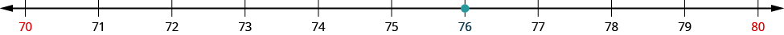
Now consider the number Find in Referenced figure.
Scroll sideways to inspect every column.
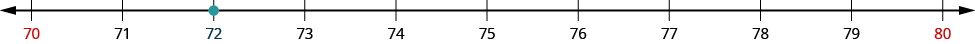
How do we round to the nearest ten. Find in Referenced figure.
Scroll sideways to inspect every column.
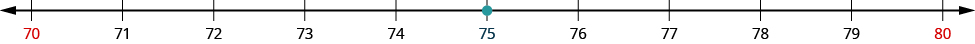
So that everyone rounds the same way in cases like this, mathematicians have agreed to round to the higher number, So, rounded to the nearest ten is
Now that we have looked at this process on the number line, we can introduce a more general procedure. To round a number to a specific place, look at the number to the right of that place. If the number is less than round down. If it is greater than or equal to round up.
So, for example, to round to the nearest ten, we look at the digit in the ones place.
Scroll sideways to inspect every column.
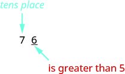
The digit in the ones place is a Because is greater than or equal to we increase the digit in the tens place by one. So the in the tens place becomes an Now, replace any digits to the right of the with zeros. So, rounds to
Scroll sideways to inspect every column.
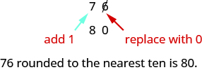
Let’s look again at rounding to the nearest Again, we look to the ones place.
Scroll sideways to inspect every column.
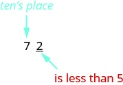
The digit in the ones place is Because is less than we keep the digit in the tens place the same and replace the digits to the right of it with zero. So rounded to the nearest ten is
Scroll sideways to inspect every column.
Round to the nearest ten.
Solution
Scroll sideways to see all 2 content columns.
| Locate the tens place. | Scroll sideways to inspect every column. 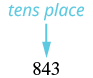 |
| Underline the digit to the right of the tens place. | Scroll sideways to inspect every column. |
| Since 3 is less than 5, do not change the digit in the tens place. | Scroll sideways to inspect every column. |
| Replace all digits to the right of the tens place with zeros. | Scroll sideways to inspect every column. |
| Rounding 843 to the nearest ten gives 840. |
Round each number to the nearest hundred:
- ⓐ
- ⓑ
Solution
Scroll sideways to see all 2 content columns.
| ⓐ | |
| Locate the hundreds place. | Scroll sideways to inspect every column. 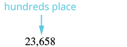 |
| The digit to the right of the hundreds place is 5. Underline the digit to the right of the hundreds place. | Scroll sideways to inspect every column. |
| Since 5 is greater than or equal to 5, round up by adding 1 to the digit in the hundreds place. Then replace all digits to the right of the hundreds place with zeros. | Scroll sideways to inspect every column. 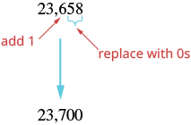 So 23,658 rounded to the nearest hundred is 23,700. |
Scroll sideways to see all 2 content columns.
| ⓑ | |
| Locate the hundreds place. | Scroll sideways to inspect every column. |
| Underline the digit to the right of the hundreds place. | Scroll sideways to inspect every column. |
| The digit to the right of the hundreds place is 7. Since 7 is greater than or equal to 5, round up by adding 1 to the 9. Then place all digits to the right of the hundreds place with zeros. | Scroll sideways to inspect every column. 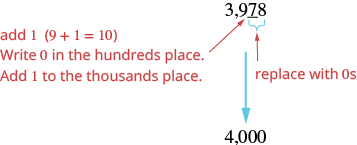 So 3,978 rounded to the nearest hundred is 4,000. |
Round each number to the nearest thousand:
- ⓐ
- ⓑ
Solution
Scroll sideways to see all 2 content columns.
| ⓐ | |
| Locate the thousands place. Underline the digit to the right of the thousands place. | Scroll sideways to inspect every column. 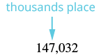 |
| The digit to the right of the thousands place is 0. Since 0 is less than 5, we do not change the digit in the thousands place. | Scroll sideways to inspect every column. |
| We then replace all digits to the right of the thousands pace with zeros. | Scroll sideways to inspect every column. So 147,032 rounded to the nearest thousand is 147,000. |
Scroll sideways to see all 2 content columns.
| ⓑ | |
| Locate the thousands place. | Scroll sideways to inspect every column. |
| Underline the digit to the right of the thousands place. | Scroll sideways to inspect every column. |
| The digit to the right of the thousands place is 5. Since 5 is greater than or equal to 5, round up by adding 1 to the 9. Then replace all digits to the right of the thousands place with zeros. | Scroll sideways to inspect every column. 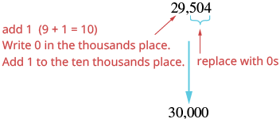 So 29,504 rounded to the nearest thousand is 30,000. |
Notice that in part ⓑ , when we add thousand to the thousands, the total is thousands. We regroup this as ten thousand and thousands. We add the ten thousand to the ten thousands and put a in the thousands place.